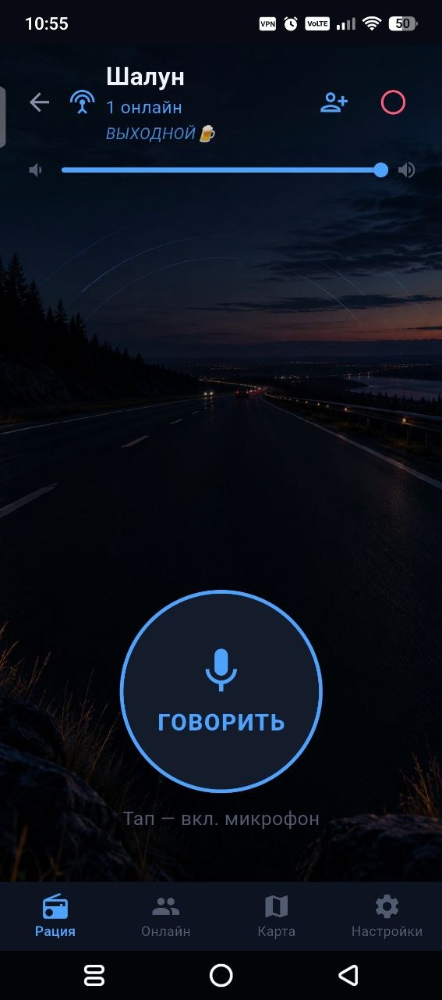

Говорите как удобно
Удерживайте кнопку во время речи или включите режим «тумблер»: одно нажатие начинает передачу, второе заканчивает. На экране видны позывной говорящего и время эфира.
Два режима передачиИнтернет-рация для коллег и друзей
Когда объяснить голосом проще, чем написать. Соберите команду в канале, нажмите «ГОВОРИТЬ» — и оставайтесь на связи.
Установка из APK · Нужен мобильный интернет или Wi-Fi

Вместо длинной переписки
Согласовать встречу, предупредить коллег или просто перекинуться парой слов. Шалун объединяет голосовую связь и полезные инструменты команды в одном приложении.
Что умеет Шалун
Всё нужное рядом.
Без поиска по длинным меню.
Удерживайте кнопку во время речи или включите режим «тумблер»: одно нажатие начинает передачу, второе заканчивает. На экране видны позывной говорящего и время эфира.
Два режима передачиОткрытые и приватные каналы, приглашения и заявки на вступление. Соберите коллег или друзей в одном месте.
Можно делиться геопозицией с участниками канала. Каждый сам решает, показывать ли себя на карте.
Поделитесь приглашением в канал. В канале с одобрением администратор рассматривает заявки на вход.
Позывные, фотографии и статусы помогают узнать, кто в команде и кто сейчас на связи.
Общайтесь через подключённые Bluetooth-наушники. Передачей управляйте кнопкой на экране телефона.
Одобрение заявок, назначение администраторов и управление доступом участников. Можно запретить участнику передачу с микрофона.
Выбор собеседника доступен во вкладке «Онлайн». Для двустороннего разговора оба участника выбирают друг друга. Перед важным разговором проверьте выбранный режим.
Темы, общий фон канала, сигналы окончания передачи, затемнение и крупный эфирный экран. У настроек есть пояснения по значку информации.
При запуске рация проверяет наличие новой версии и предлагает обновиться. Ручная проверка тоже доступна в настройках.
Первый выход на связь
Скачайте APK и откройте файл на Android. Если система попросит, разрешите установку из выбранного браузера.
Выберите позывной и разрешите доступ к микрофону. Геолокация нужна только для показа на карте.
Получите приглашение от коллеги или создайте свой канал. При входе по заявке дождитесь одобрения администратора.
Без лишних вопросов
Подробные подсказки есть и в самом приложении: Настройки → значок информации рядом с пунктом.
Нет. Шалун передаёт голос через интернет: мобильную сеть или Wi-Fi. Качество связи зависит от покрытия и соединения. Это не радиостанция с прямой передачей между телефонами.
В настройках включите режим «тумблер». Нажмите «ГОВОРИТЬ», чтобы включить микрофон, затем нажмите ещё раз, чтобы закончить передачу.
Звук через подключённую гарнитуру поддерживается. Управление передачей выполняется на экране телефона; работа аппаратной PTT-кнопки гарнитуры не заявлена.
Установите новую APK поверх предыдущей версии, не удаляя приложение. При запуске появится предложение обновления. Либо откройте «Настройки → Проверить обновления».
Включите «Показывать меня на карте», предоставьте доступ к геолокации и проверьте интернет. При выключенной настройке делиться координатами не нужно. Отметка может показывать последнее полученное местоположение.
Напишите разработчику в Telegram. Укажите версию рации, модель телефона и что именно не получилось. По возможности приложите скриншот.
Открыть Telegram разработчика ↗Шалун · Интернет-рация для Android
Начните со своего канала и первого разговора.
Скачать приложениеВ дороге пользуйтесь телефоном только когда это безопасно.